<!DOCTYPE html>
<html>
<head><meta name="generator" content="Hexo 3.9.0">
  <meta charset="utf-8">
  <link rel="manifest" href="manifest.json">
  
  <title>在威联通 NAS 上使用 Docker | Hello, I am Marx</title>
  <meta name="baidu-site-verification" content="fwLK28VV6P">
  <meta name="viewport" content="width=device-width, initial-scale=1, maximum-scale=1">
  <meta name="description" content="最近想折腾下家里的 NAS，想把它变成一个开发机。在开发机上运行服务，首先想到的就是使用 Docker。Docker 的优点有一大堆，我看中的就是隔离性，一致性和快速部署。">
<meta name="keywords" content="Cloud,Docker,Life">
<meta property="og:type" content="article">
<meta property="og:title" content="在威联通 NAS 上使用 Docker">
<meta property="og:url" content="https://marxjiao.com/2019/11/03/qnap-docker/index.html">
<meta property="og:site_name" content="Hello, I am Marx">
<meta property="og:description" content="最近想折腾下家里的 NAS，想把它变成一个开发机。在开发机上运行服务，首先想到的就是使用 Docker。Docker 的优点有一大堆，我看中的就是隔离性，一致性和快速部署。">
<meta property="og:locale" content="zh-CN">
<meta property="og:image" content="https://marxjiao.com/2019/11/03/qnap-docker/container-station-icon.png">
<meta property="og:image" content="https://marxjiao.com/2019/11/03/qnap-docker/overview.png">
<meta property="og:image" content="https://marxjiao.com/2019/11/03/qnap-docker/install-registry.png">
<meta property="og:image" content="https://marxjiao.com/2019/11/03/qnap-docker/registry-yaml.png">
<meta property="og:image" content="https://marxjiao.com/2019/11/03/qnap-docker/add-registry.png">
<meta property="og:image" content="https://marxjiao.com/2019/11/03/qnap-docker/pull-image.png">
<meta property="og:image" content="https://marxjiao.com/2019/11/03/qnap-docker/images-list.png">
<meta property="og:image" content="https://marxjiao.com/2019/11/03/qnap-docker/add-container.png">
<meta property="og:image" content="https://marxjiao.com/2019/11/03/qnap-docker/advanced-settings.png">
<meta property="og:image" content="https://marxjiao.com/2019/11/03/qnap-docker/containers-list.png">
<meta property="og:image" content="https://marxjiao.com/2019/11/03/qnap-docker/ui-result.png">
<meta property="og:image" content="https://marxjiao.com/2019/11/03/qnap-docker/docker-run.png">
<meta property="og:updated_time" content="2020-08-04T09:34:02.383Z">
<meta name="twitter:card" content="summary">
<meta name="twitter:title" content="在威联通 NAS 上使用 Docker">
<meta name="twitter:description" content="最近想折腾下家里的 NAS，想把它变成一个开发机。在开发机上运行服务，首先想到的就是使用 Docker。Docker 的优点有一大堆，我看中的就是隔离性，一致性和快速部署。">
<meta name="twitter:image" content="https://marxjiao.com/2019/11/03/qnap-docker/container-station-icon.png">
  
  
    <link rel="icon" href="/favicon.png">
  
  
    <link href="//fonts.googleapis.com/css?family=Source+Code+Pro" rel="stylesheet" type="text/css">
  
  <link rel="stylesheet" href="/css/style.css">
  

  <script>
  var _hmt = _hmt || [];
  (function() {
    var hm = document.createElement("script");
    hm.src = "https://hm.baidu.com/hm.js?f2aece70f9b4d1eb644623e3ddf0dfe1";
    var s = document.getElementsByTagName("script")[0]; 
    s.parentNode.insertBefore(hm, s);
  })();
  </script>
  </head></html>
<body>
  <div id="container">
    <div id="wrap">
      <header id="header">
  <div id="banner"></div>
  <div id="header-outer" class="outer">
    <div id="header-title" class="inner">
      <h1 id="logo-wrap">
        <a href="/" id="logo">Hello, I am Marx</a>
      </h1>
      
        <h2 id="subtitle-wrap">
          <a href="/" id="subtitle">Technology is to the left, art is to the right. But unfortunately I can not divide them.</a>
        </h2>
      
    </div>
    <div id="header-inner" class="inner">
      <nav id="main-nav">
        <a id="main-nav-toggle" class="nav-icon"></a>
        
          <a class="main-nav-link" href="/">Home</a>
        
          <a class="main-nav-link" href="/archives">Archives</a>
        
          <a class="main-nav-link" href="/projects">Projects</a>
        
      </nav>
      <nav id="sub-nav">
        
        
      </nav>
      
    </div>
  </div>
</header>
      <div class="outer">
        <section id="main"><article id="post-qnap-docker" class="article article-type-post" itemscope itemprop="blogPost">
  <div class="article-meta">
    <a href="/2019/11/03/qnap-docker/" class="article-date">
  <time datetime="2019-11-03T02:35:10.000Z" itemprop="datePublished">2019-11-03</time>
</a>
    
  </div>
  <div class="article-inner">
    
    
      <header class="article-header">
        
  
    <h1 class="article-title" itemprop="name">
      在威联通 NAS 上使用 Docker
    </h1>
  

      </header>
    
    <div class="article-entry" itemprop="articleBody">
      
        <p>最近想折腾下家里的 NAS，想把它变成一个开发机。在开发机上运行服务，首先想到的就是使用 Docker。Docker 的优点有一大堆，我看中的就是隔离性，一致性和快速部署。</p>
<a id="more"></a>

<p>下面我们来看怎么在威联通 NAS 上安装和运行 Docker。本文主要介绍以下过程：</p>
<ol>
<li>NAS 上 Docker 环境安装</li>
<li>NAS 上搭建私有 Docker 仓库</li>
<li>本地开发并 push 镜像到私有仓库</li>
<li>在 NAS 上运行私库中的镜像</li>
</ol>
<h2 id="NAS-上-Docker-环境安装"><a href="#NAS-上-Docker-环境安装" class="headerlink" title="NAS 上 Docker 环境安装"></a>NAS 上 Docker 环境安装</h2><p>安装非常简单，登录 NAS 后台在应用中心安装 <code>Container Station</code> 就行了。</p>
<p>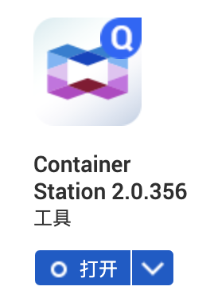</p>
<p>打开 <code>Container Station</code> 我们能看到正在运行的 Containers 。我这里已经安装好了 <code>registry</code>，就是接下来要介绍的私库搭建。</p>
<p>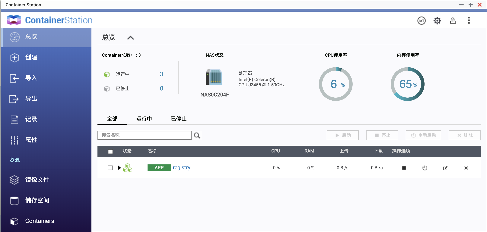</p>
<h2 id="安装私库"><a href="#安装私库" class="headerlink" title="安装私库"></a>安装私库</h2><p>私库也是一键安装的。在 Container Station 中点击创建，我们可以看到所有的可以创建的容器。在列表中找到 <code>Registry</code> 点击安装即可。</p>
<p>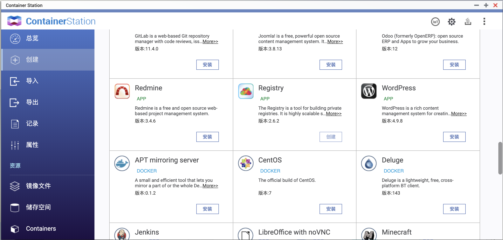</p>
<p>安装完成后我们可以到 <code>Containers</code> 菜单中看到安装好的私库容器。在操作选项中点击编辑图标即可看到生成容器的 Docker Compose YAML 配置文件。在文件中我们可以看到私库的端口，我这里是 <code>6088</code> ，所以私库地址就是<code>192.168.50.51:6088</code>。</p>
<p>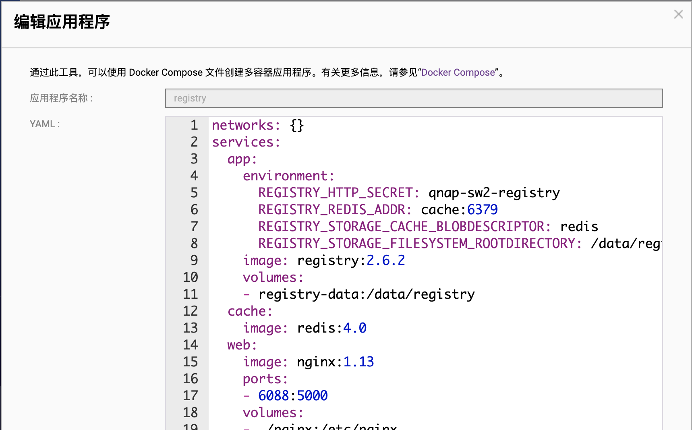</p>
<h2 id="开发程序并-push-镜像到私有仓库"><a href="#开发程序并-push-镜像到私有仓库" class="headerlink" title="开发程序并 push 镜像到私有仓库"></a>开发程序并 push 镜像到私有仓库</h2><p>我们简单写一个 node server。</p>
<figure class="highlight javascript"><table><tr><td class="gutter"><pre><span class="line">1</span><br><span class="line">2</span><br><span class="line">3</span><br><span class="line">4</span><br><span class="line">5</span><br><span class="line">6</span><br><span class="line">7</span><br><span class="line">8</span><br><span class="line">9</span><br><span class="line">10</span><br><span class="line">11</span><br><span class="line">12</span><br><span class="line">13</span><br><span class="line">14</span><br><span class="line">15</span><br><span class="line">16</span><br><span class="line">17</span><br><span class="line">18</span><br></pre></td><td class="code"><pre><span class="line"><span class="comment">// content of index.js</span></span><br><span class="line"><span class="keyword">const</span> http = <span class="built_in">require</span>(<span class="string">'http'</span>)</span><br><span class="line"><span class="keyword">const</span> port = <span class="number">3000</span></span><br><span class="line"></span><br><span class="line"><span class="keyword">const</span> requestHandler = <span class="function">(<span class="params">request, response</span>) =&gt;</span> &#123;</span><br><span class="line">  <span class="built_in">console</span>.log(request.url)</span><br><span class="line">  response.end(<span class="string">'Hello Node.js Server!'</span>)</span><br><span class="line">&#125;</span><br><span class="line"></span><br><span class="line"><span class="keyword">const</span> server = http.createServer(requestHandler)</span><br><span class="line"></span><br><span class="line">server.listen(port, (err) =&gt; &#123;</span><br><span class="line">  <span class="keyword">if</span> (err) &#123;</span><br><span class="line">    <span class="keyword">return</span> <span class="built_in">console</span>.log(<span class="string">'something bad happened'</span>, err)</span><br><span class="line">  &#125;</span><br><span class="line"></span><br><span class="line">  <span class="built_in">console</span>.log(<span class="string">`server is listening on <span class="subst">$&#123;port&#125;</span>`</span>)</span><br><span class="line">&#125;)</span><br></pre></td></tr></table></figure>

<p>package.json</p>
<figure class="highlight json"><table><tr><td class="gutter"><pre><span class="line">1</span><br><span class="line">2</span><br><span class="line">3</span><br><span class="line">4</span><br><span class="line">5</span><br><span class="line">6</span><br><span class="line">7</span><br><span class="line">8</span><br><span class="line">9</span><br><span class="line">10</span><br><span class="line">11</span><br></pre></td><td class="code"><pre><span class="line">&#123;</span><br><span class="line">  <span class="attr">"name"</span>: <span class="string">"test-docker"</span>,</span><br><span class="line">  <span class="attr">"version"</span>: <span class="string">"1.0.0"</span>,</span><br><span class="line">  <span class="attr">"description"</span>: <span class="string">""</span>,</span><br><span class="line">  <span class="attr">"main"</span>: <span class="string">"index.js"</span>,</span><br><span class="line">  <span class="attr">"scripts"</span>: &#123;</span><br><span class="line">    <span class="attr">"start"</span>: <span class="string">"node index.js"</span></span><br><span class="line">  &#125;,</span><br><span class="line">  <span class="attr">"author"</span>: <span class="string">""</span>,</span><br><span class="line">  <span class="attr">"license"</span>: <span class="string">"ISC"</span></span><br><span class="line">&#125;</span><br></pre></td></tr></table></figure>

<p>Dockerfile</p>
<figure class="highlight dockerfile"><table><tr><td class="gutter"><pre><span class="line">1</span><br><span class="line">2</span><br><span class="line">3</span><br><span class="line">4</span><br><span class="line">5</span><br><span class="line">6</span><br><span class="line">7</span><br><span class="line">8</span><br><span class="line">9</span><br><span class="line">10</span><br></pre></td><td class="code"><pre><span class="line"><span class="keyword">FROM</span> node:<span class="number">10.16</span>.<span class="number">3</span>-alpine</span><br><span class="line"></span><br><span class="line"><span class="keyword">WORKDIR</span> /app</span><br><span class="line"></span><br><span class="line"><span class="keyword">COPY</span> package.json /app/package.json</span><br><span class="line"><span class="keyword">COPY</span> index.js /app/index.js</span><br><span class="line"></span><br><span class="line"><span class="keyword">EXPOSE</span> <span class="number">3000</span></span><br><span class="line"></span><br><span class="line"><span class="keyword">CMD</span> npm start</span><br></pre></td></tr></table></figure>

<p>在项目目录执行下面的命令来完成等镜像的构建，打 tag 和上传。</p>
<figure class="highlight plain"><table><tr><td class="gutter"><pre><span class="line">1</span><br><span class="line">2</span><br><span class="line">3</span><br><span class="line">4</span><br><span class="line">5</span><br><span class="line">6</span><br><span class="line">7</span><br><span class="line">8</span><br></pre></td><td class="code"><pre><span class="line"># 编译镜像</span><br><span class="line">docker build -t my-node-server .</span><br><span class="line"></span><br><span class="line"># 给镜像加 tag</span><br><span class="line">docker tag my-node-server 192.168.50.51:6088/my-node-server:1.0.0  </span><br><span class="line"></span><br><span class="line"># push 镜像到私有仓库</span><br><span class="line">docker push 192.168.50.51:6088/my-node-server:1.0.0</span><br></pre></td></tr></table></figure>

<h2 id="在-NAS-上运行私库中的镜像"><a href="#在-NAS-上运行私库中的镜像" class="headerlink" title="在 NAS 上运行私库中的镜像"></a>在 NAS 上运行私库中的镜像</h2><h3 id="图形化操作运行-Docker-镜像"><a href="#图形化操作运行-Docker-镜像" class="headerlink" title="图形化操作运行 Docker 镜像"></a>图形化操作运行 Docker 镜像</h3><p>我们可以在 Container Station 中使用图形化的方式运行程序。</p>
<p>先来设置镜像仓库地址。进入 Container Station 的 <code>属性</code> 菜单。切到 <code>Registry服务器</code> 页面。点击 <code>新增</code> 按钮。输入我的私库信息。</p>
<p>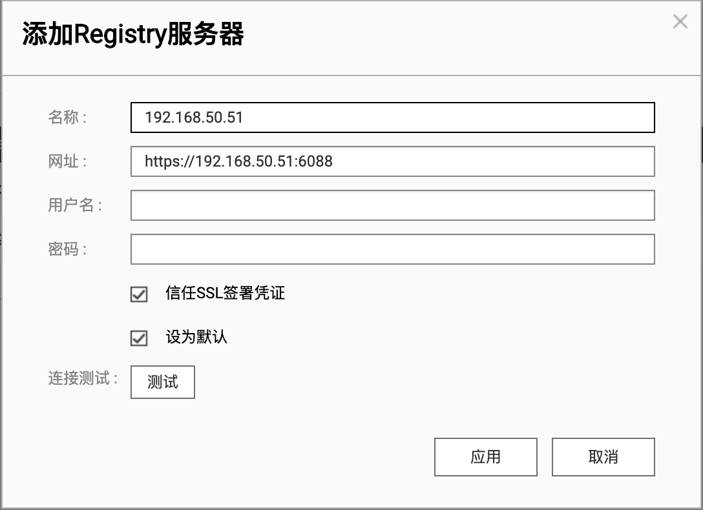</p>
<p>进入 Container Station 的 Containers 菜单。点击拉取，输入刚才上传的镜像。</p>
<p>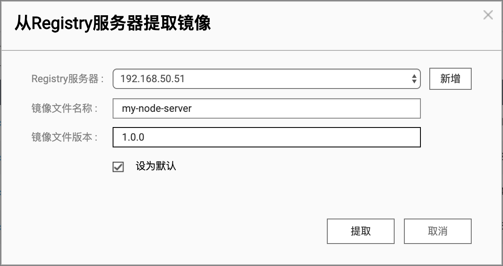</p>
<p>之后就能看到我们的镜像已经在列表中了。</p>
<p>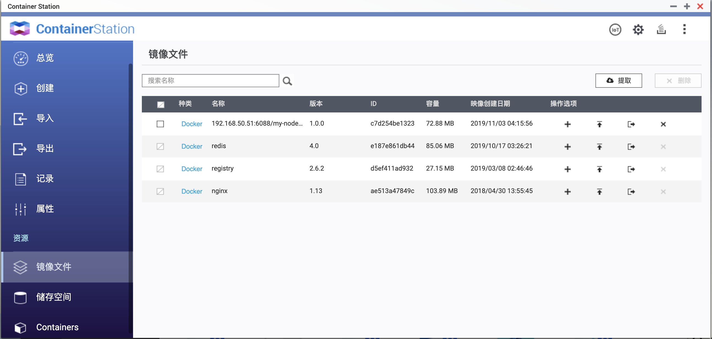</p>
<p>点击操作选项里的 <code>+</code> 按钮，进入创建容器配置。</p>
<p>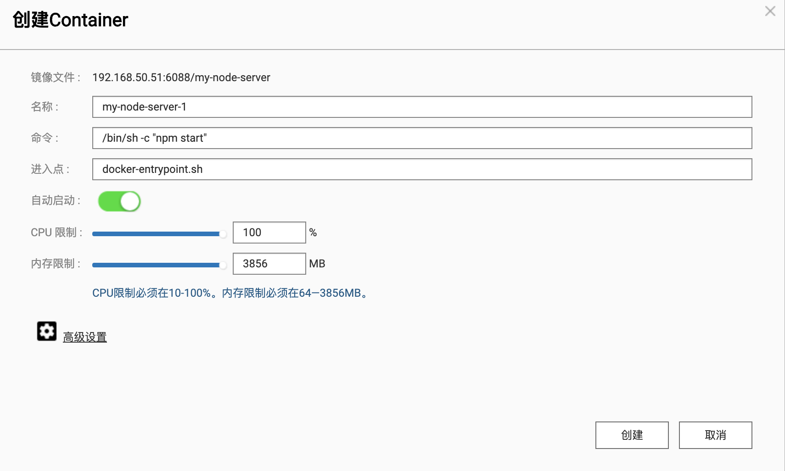</p>
<p>点击高级选项可以配置容器的环境，网络，设备和挂载的目录。这里我们映射端口 40000 到 3000</p>
<p>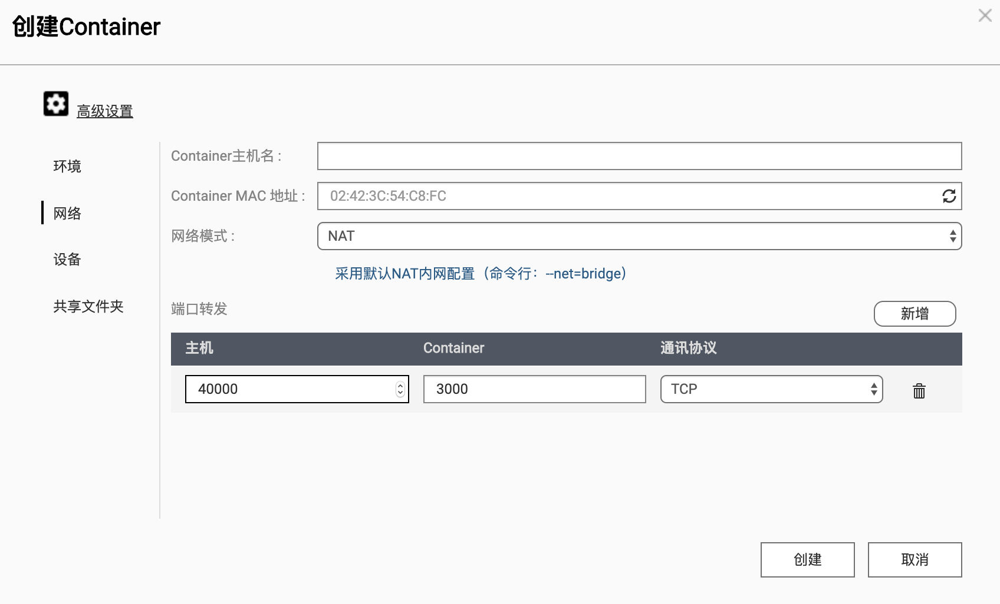</p>
<p>配置好后我们进入 Containers 菜单，能看到刚才创建的容器已经运行起来了。</p>
<p>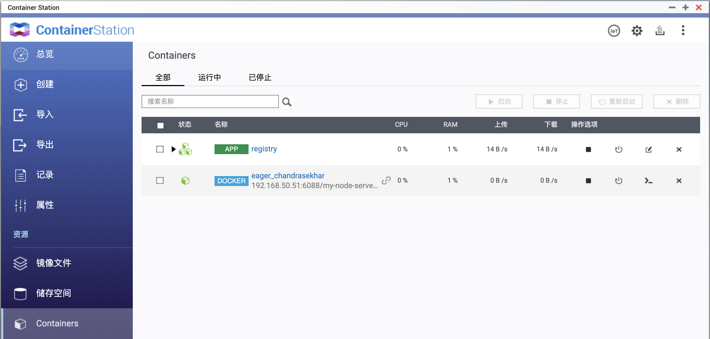</p>
<p>访问 <code>http://192.168.50.51:40000</code> 能看到程序运行正常。</p>
<p>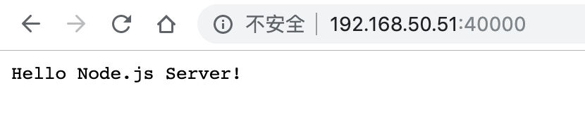</p>
<h3 id="使用命令运行-Docker-镜像"><a href="#使用命令运行-Docker-镜像" class="headerlink" title="使用命令运行 Docker 镜像"></a>使用命令运行 Docker 镜像</h3><p>威联通 NAS 系统基于 Linux 开发，可以 ssh 登录到 nas，执行各种命令就行了。</p>
<figure class="highlight plain"><table><tr><td class="gutter"><pre><span class="line">1</span><br><span class="line">2</span><br><span class="line">3</span><br><span class="line">4</span><br><span class="line">5</span><br></pre></td><td class="code"><pre><span class="line"># pull 镜像</span><br><span class="line">docker pull 192.168.50.51:6088/my-node-server:1.0.0</span><br><span class="line"></span><br><span class="line"># 运行镜像</span><br><span class="line">docker run -p 40001:3000 192.168.50.51:6088/my-node-server:1.0.0</span><br></pre></td></tr></table></figure>

<p>访问 <code>http://192.168.50.51:40001/</code>，看到我们的程序已经运行起来了</p>
<p>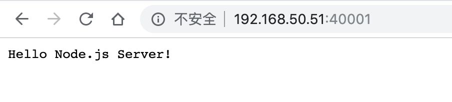</p>
<h2 id="总结"><a href="#总结" class="headerlink" title="总结"></a>总结</h2><p>以上是在 NAS 上安装使用 Docker 的简单示例。过程不重要，重要的是家里的 NAS 不再只是一个下电影，存照片的工具，可以当成一个云开发机，折腾各种东西了。</p>

      
    </div>
    <footer class="article-footer">
      <a data-url="https://marxjiao.com/2019/11/03/qnap-docker/" data-id="ckdfqxh2u000d2gon461rae21" class="article-share-link">分享</a>
      
      
  <ul class="article-tag-list"><li class="article-tag-list-item"><a class="article-tag-list-link" href="/tags/Cloud/">Cloud</a></li><li class="article-tag-list-item"><a class="article-tag-list-link" href="/tags/Docker/">Docker</a></li><li class="article-tag-list-item"><a class="article-tag-list-link" href="/tags/Life/">Life</a></li></ul>

    </footer>
  </div>
  
    
<nav id="article-nav">
  
  
    <a href="/2019/04/02/your-beauty-value/" id="article-nav-older" class="article-nav-link-wrap">
      <strong class="article-nav-caption">下一篇</strong>
      <div class="article-nav-title">使用小程序云开发和百度云 AI 接口做了一个颜值测量小程序</div>
    </a>
  
</nav>

  
</article>

</section>
        
          <aside id="sidebar">
  
    

  
    
  <div class="widget-wrap">
    <h3 class="widget-title">标签</h3>
    <div class="widget">
      <ul class="tag-list"><li class="tag-list-item"><a class="tag-list-link" href="/tags/Cloud/">Cloud</a></li><li class="tag-list-item"><a class="tag-list-link" href="/tags/Docker/">Docker</a></li><li class="tag-list-item"><a class="tag-list-link" href="/tags/Life/">Life</a></li><li class="tag-list-item"><a class="tag-list-link" href="/tags/angular/">angular</a></li><li class="tag-list-item"><a class="tag-list-link" href="/tags/flex-layout/">flex-layout</a></li><li class="tag-list-item"><a class="tag-list-link" href="/tags/hexo/">hexo</a></li><li class="tag-list-item"><a class="tag-list-link" href="/tags/material/">material</a></li><li class="tag-list-item"><a class="tag-list-link" href="/tags/mock/">mock</a></li><li class="tag-list-item"><a class="tag-list-link" href="/tags/node/">node</a></li><li class="tag-list-item"><a class="tag-list-link" href="/tags/react/">react</a></li><li class="tag-list-item"><a class="tag-list-link" href="/tags/typescript/">typescript</a></li><li class="tag-list-item"><a class="tag-list-link" href="/tags/webpack/">webpack</a></li><li class="tag-list-item"><a class="tag-list-link" href="/tags/webpack-plugin/">webpack plugin</a></li><li class="tag-list-item"><a class="tag-list-link" href="/tags/小程序/">小程序</a></li></ul>
    </div>
  </div>


  
    
  <div class="widget-wrap">
    <h3 class="widget-title">标签云</h3>
    <div class="widget tagcloud">
      <a href="/tags/Cloud/" style="font-size: 10px;">Cloud</a> <a href="/tags/Docker/" style="font-size: 10px;">Docker</a> <a href="/tags/Life/" style="font-size: 10px;">Life</a> <a href="/tags/angular/" style="font-size: 10px;">angular</a> <a href="/tags/flex-layout/" style="font-size: 10px;">flex-layout</a> <a href="/tags/hexo/" style="font-size: 10px;">hexo</a> <a href="/tags/material/" style="font-size: 10px;">material</a> <a href="/tags/mock/" style="font-size: 10px;">mock</a> <a href="/tags/node/" style="font-size: 10px;">node</a> <a href="/tags/react/" style="font-size: 20px;">react</a> <a href="/tags/typescript/" style="font-size: 10px;">typescript</a> <a href="/tags/webpack/" style="font-size: 20px;">webpack</a> <a href="/tags/webpack-plugin/" style="font-size: 10px;">webpack plugin</a> <a href="/tags/小程序/" style="font-size: 10px;">小程序</a>
    </div>
  </div>

  
    
  <div class="widget-wrap">
    <h3 class="widget-title">归档</h3>
    <div class="widget">
      <ul class="archive-list"><li class="archive-list-item"><a class="archive-list-link" href="/archives/2019/11/">十一月 2019</a></li><li class="archive-list-item"><a class="archive-list-link" href="/archives/2019/04/">四月 2019</a></li><li class="archive-list-item"><a class="archive-list-link" href="/archives/2018/08/">八月 2018</a></li><li class="archive-list-item"><a class="archive-list-link" href="/archives/2018/04/">四月 2018</a></li><li class="archive-list-item"><a class="archive-list-link" href="/archives/2018/03/">三月 2018</a></li><li class="archive-list-item"><a class="archive-list-link" href="/archives/2017/12/">十二月 2017</a></li><li class="archive-list-item"><a class="archive-list-link" href="/archives/2017/08/">八月 2017</a></li><li class="archive-list-item"><a class="archive-list-link" href="/archives/2017/06/">六月 2017</a></li><li class="archive-list-item"><a class="archive-list-link" href="/archives/2017/05/">五月 2017</a></li><li class="archive-list-item"><a class="archive-list-link" href="/archives/2017/03/">三月 2017</a></li><li class="archive-list-item"><a class="archive-list-link" href="/archives/2017/02/">二月 2017</a></li><li class="archive-list-item"><a class="archive-list-link" href="/archives/2017/01/">一月 2017</a></li></ul>
    </div>
  </div>


  
    
  <div class="widget-wrap">
    <h3 class="widget-title">最新文章</h3>
    <div class="widget">
      <ul>
        
          <li>
            <a href="/2019/11/03/qnap-docker/">在威联通 NAS 上使用 Docker</a>
          </li>
        
          <li>
            <a href="/2019/04/02/your-beauty-value/">使用小程序云开发和百度云 AI 接口做了一个颜值测量小程序</a>
          </li>
        
          <li>
            <a href="/2018/08/26/puppeteer-install/">手动下载 Chrome，解决 puppeteer 无法使用问题</a>
          </li>
        
          <li>
            <a href="/2018/04/10/node-webpack/">使用webpack搭建基于typescript的node开发环境</a>
          </li>
        
          <li>
            <a href="/2018/03/16/js-extends/">javascript继承方式对比</a>
          </li>
        
      </ul>
    </div>
  </div>

  
</aside>
<!-- ad1 -->
<ins class="adsbygoogle"
style="display:block"
data-ad-client="ca-pub-2718852572240859"
data-ad-slot="4184044363"
data-ad-format="auto"
data-full-width-responsive="true"></ins>
<script>
(adsbygoogle = window.adsbygoogle || []).push({});
</script>
        
      </div>
      <footer id="footer">
  
  <div class="outer">
    <div id="footer-info" class="inner">
      &copy; 2020 Marx<br>
      Powered by <a href="http://hexo.io/" target="_blank">Hexo</a>
    </div>
  </div>
</footer>
    </div>
    <nav id="mobile-nav">
  
    <a href="/" class="mobile-nav-link">Home</a>
  
    <a href="/archives" class="mobile-nav-link">Archives</a>
  
    <a href="/projects" class="mobile-nav-link">Projects</a>
  
</nav>
    

<script src="//ajax.googleapis.com/ajax/libs/jquery/2.0.3/jquery.min.js"></script>


  <link rel="stylesheet" href="/fancybox/jquery.fancybox.css">
  <script src="/fancybox/jquery.fancybox.pack.js"></script>


<script src="/js/script.js"></script>

  </div>
  <script>
  if('serviceWorker' in navigator) {
  navigator.serviceWorker
        .register('/sw.js')
        .then(function() { console.log("Service Worker Registered"); });
  }
  </script>
</body>
</html>